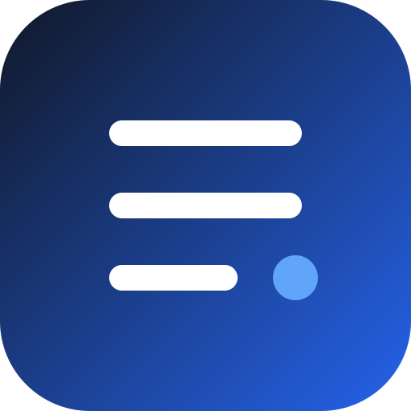

Ban Personal Repo
自用 iOS 越狱软件源。将本页面所在网址添加到 Sileo、Zebra 或 Cydia 即可。
https://YOUR_GITHUB_USERNAME.github.io/YOUR_REPOSITORY/
部署后，把上面的示例地址替换成实际仓库地址；每次新增或更新 .deb 后重新运行 build 脚本。

自用 iOS 越狱软件源。将本页面所在网址添加到 Sileo、Zebra 或 Cydia 即可。
https://YOUR_GITHUB_USERNAME.github.io/YOUR_REPOSITORY/
部署后，把上面的示例地址替换成实际仓库地址；每次新增或更新 .deb 后重新运行 build 脚本。